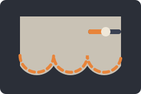
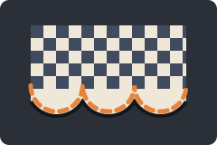

Overview
Mark edges on a mesh in Blender, and the add-on draws procedural, adjustable stitches, line art and checks along them, then bakes them to masks for painting textures in your painting app.
Kinds of layers

- StitchesDashed or zigzag. Set how far in from the edge they run: the distance is a real size on the model, whatever the UV density.
- Line ArtLines on the marked edges, as the name says. Their width is a real size too, whatever the UV density.
- GridA seamless checkerboard.
Workflow
 1. Mark edges
1. Mark edges
2. Tune 3. Bake
3. Bake
4. Paint
Why on the 3D surface
Sizes are real millimetres on the model, so stretched UVs don't change them.
Requirements
Blender 4.4 or newer, and a mesh with UVs.